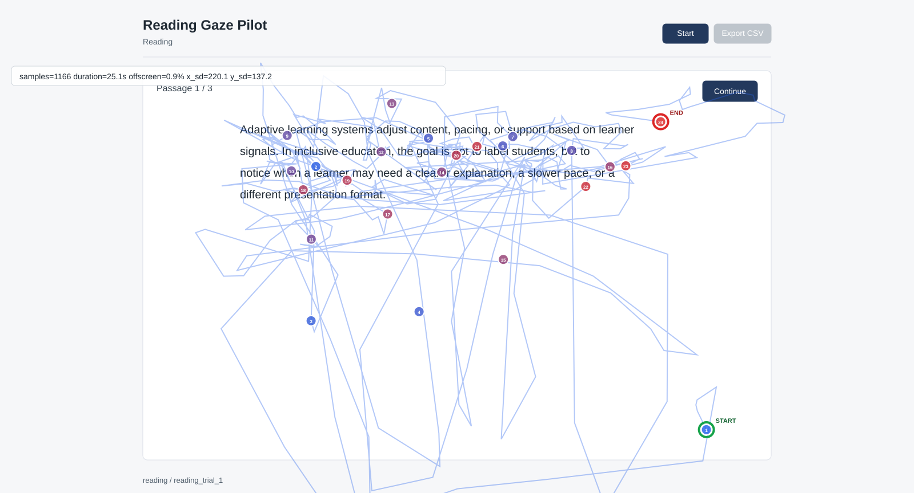

核心请求：请导师判断我们是否可以把项目定位为“普通笔记本过程数据支持学习状态与功能性支持需求理解”，并把 SEN/SEND 放在后续聚焦和伦理框架中，而不是第一阶段的身份分类目标。
从“识别 SEN 学生”改为“理解任务中的学习状态与支持需求线索”。
先用普通大学生或混合样本验证 gaze、pointer、scroll、latency 是否有可解释信号。
先补行为上下文和主观标签，再谈模型；自适应系统放在第三阶段。
| 不建议说 | 更稳妥的说法 | 原因 |
|---|---|---|
| 识别 SEN 学生 | 识别任务中的学习状态和支持需求线索 | 避免身份标签化 |
| 自动判断谁需要帮助 | 提供可选、可解释、可撤回的支持建议 | 降低误判风险 |
| 系统根据身份调节 | 系统根据当前任务状态和用户选择调节 | 更符合自适应支持伦理 |
| 证据组 | 文章 | 可讲结论 | 本项目如何使用 |
|---|---|---|---|
| 支持需求 | A1, A2 | 高等教育 learning difficulties 学生需要具体学术、行政和可访问性支持。 | 说明研究对象不是抽象 inclusion，而是具体支持需求。 |
| 系统障碍 | A3 | 困难来自大学系统、教学实践、技术可及性和支持流程。 | 把需求放在学习环境中解释。 |
| 技术可信度 | A4 | SEND 学生可以接受数据化工具，但担心系统失效和错误判断。 | 作为隐私、透明、非惩罚性边界。 |
| 过程数据 | A7 | 大学生学习过程数据能揭示最终成绩看不到的 SRL 差异。 | 支持 gaze、pointer、scroll、latency 作为过程信号。 |
文献结论：我们有理由研究“学习支持需求”，也有理由采集“过程数据”；但文献并没有直接证明 webcam gaze + platform logs 已经可以推断 SEN/SEND 大学生需求。
| 前人方向 | 能支持什么 | 不能支持什么 | 我们怎么接上 |
|---|---|---|---|
| C007 / WebGazer 学习任务 | 普通浏览器 gaze 可用于学习任务和状态建模。 | 不能直接证明 SEN/SEND 大学生支持需求可以被准确推断。 | 复现普通笔记本采集链路。 |
| A5 / special needs 多模态模型 | 多模态和 adaptive education 思路可借鉴。 | 对象为 5-18 岁，非大学生真实平台任务。 | 借鉴架构语言，不作为 HE 成人证据。 |
| A7 / 大学生过程数据 | 大学学习过程数据能揭示 SRL 差异。 | 不是 SEN/SEND 特定群体，也不是 webcam gaze。 | 把 gaze + pointer + timing 作为过程数据扩展。 |
| A1-A4 / SEN/SEND HE 支持 | 证明高等教育支持需求和技术可信度问题真实存在。 | 没有直接验证 gaze + platform logs 的预测价值。 | 把技术路线绑定到支持需求，而不是诊断。 |
学习状态线索
注意、困惑、压力、支持请求是否能从过程数据中看到。
支持需求映射
哪些状态对应哪些支持偏好，SEN/SEND 学生是否有特殊模式。
自适应支持原型
摘要、提示、术语解释、更多时间、任务分步。
效果评估
支持是否改善理解、负荷、体验、公平性和信任。
| 标准 | 具体含义 |
|---|---|
| 数据可采 | 普通笔记本能稳定采 gaze + interaction logs。 |
| 状态有信号 | 部分特征与 probe、主观评分或任务表现有关。 |
| 解释可行 | AOI、回看、停顿、请求支持能被非技术导师理解。 |
| 风险可控 | 不保存网页视频，不做诊断，不做身份分类。 |
第一阶段问题：不是“谁是 SEN 学生”，而是“这些过程数据能否反映注意、困惑、压力和支持请求等学习状态线索”。
| 样本 | 条件 | gaze rows | 平均采样率 | offscreen | 理解题 |
|---|---|---|---|---|---|
| P001 | 受试者 1 早期基线，正常光照 | 8494 | 50.0Hz | 0.0274 | 3/3 |
| P002 | 受试者 1，戴眼镜并持续转头 | 3419 | 27.4Hz | 0.0140 | 2/3 |
| P003 | 受试者 2，正常光，不戴眼镜，尽量不转头 | 12915 | 49.6Hz | 0.0132 | 2/3 |
| P004 | 受试者 2，略暗/逆光，不戴眼镜，尽量不转头 | 6225 | 50.0Hz | 0.0050 | 2/3 |
| P005 | 受试者 1 严格基线，不戴眼镜，正常光，尽量不转头 | 5614 | 47.6Hz | 0.0082 | 3/3 |
严格正常条件，不戴眼镜、正常光、尽量不转头；TUT=0/3，理解题 3/3。
同一受试者戴眼镜并持续转头，平均采样率降到 27.4Hz。
眼镜、头动、光照、校准质量不能再只写在文件名或日志里。

下一步核心：不是多收敏感数据，而是补足可解释上下文：鼠标、滚动、响应时间、AOI、校准质量、环境条件和支持偏好。
| 方案 | 页面活动 | 优点 | 风险/不足 | 建议 |
|---|---|---|---|---|
| A. 阅读理解 | 短文本阅读、TUT/困惑 probe、理解题 | 最接近 C007，眼动解释直接，AOI 清楚。 | 可能偏认知心理，不够像真实课程平台。 | 第一版推荐 |
| B. 学习材料 + 支持选择 | 阅读材料后可选择摘要、提示、更多时间、术语解释 | 更贴近 functional support needs，可直接观察支持偏好。 | 页面设计和因果解释更复杂。 | 第二版推进 |
| C. 轻量小游戏 | 简单规则学习、注意或记忆任务 | 可控性强，数据干净。 | 与高等教育学习支持距离较远，生态效度弱。 | 不作主线 |
是否用接近 LMS 的页面风格，让任务更像大学学习场景？
第一版是否只询问支持偏好，还是允许点击“摘要/提示/更多时间”？
字号、行距、按钮大小、颜色对比度是否需要提前设为可访问标准？
| 概念 | 操作定义 | 记录方式 |
|---|---|---|
| TUT | Task-Unrelated Thought，任务无关想法；例如刚才阅读时注意离开文本、想到别的事情。 | 每段后自陈：yes/no + 可选 1-5 程度。 |
| 困惑 probe | 刚才是否有不理解、卡住、需要回看或不知道怎么答的时刻。 | 每段后自陈：none/slight/moderate/high + 可选困惑位置。 |
| AOI | Area of Interest，预先定义的页面区域，如文本、题目、选项、支持按钮。 | 系统自动保存区域矩形，并把 gaze/pointer 映射到 aoi_id。 |
| 字段 | 建议格式 | 说明 |
|---|---|---|
lighting_condition | normal / dim / backlit / uneven | 研究者开始前手动选择；必要时加 good/medium/poor 质量评分。 |
head_movement | none / slight / frequent | 研究者观察记录；不是简单 yes/no，因为轻微头动和频繁转头影响不同。 |
wearing_glasses | yes / no / unknown | 适合二值记录；可加反光备注。 |
researcher_help_event | 时间戳 + 帮助类型 | 例如解释题意、提醒坐姿、处理技术问题。 |
| 领域 | 希望收集的信息 | 用途 |
|---|---|---|
| 学习背景 | 专业阶段、材料熟悉度、相关先验知识 | 解释阅读速度和理解差异。 |
| 当前状态 | 疲劳、压力、注意力自评、睡眠或精神状态 | 作为状态分类或聚类的参照标签。 |
| 技术与隐私 | 对 webcam tracking、数据使用和系统判断的信任度 | 呼应 A4 的技术可信度问题。 |
| 支持经历 | 是否常用摘要、延时、术语解释、分步提示等支持 | 建立 support preference baseline。 |
| 领域 | 希望收集的信息 | 用途 |
|---|---|---|
| 任务体验 | 主观难度、认知负荷、困惑点、注意力波动 | 验证 gaze/pointer/latency 是否对应真实体验。 |
| 支持需求 | 希望获得哪类支持、是否觉得某类支持有帮助 | 连接第一阶段状态线索与第二阶段支持需求。 |
| 可访问性 | 字体、行距、按钮、页面节奏、说明是否清楚 | 改进页面风格和 AOI 设计。 |
| 开放反馈 | 哪里不舒服、哪里误导、哪里希望系统不要判断 | 提前发现伦理和信任风险。 |
| 技术字段 | 中文含义 | 为什么收 | 例子 |
|---|---|---|---|
pointer_move, mouse_x/y | 鼠标移动到哪里 | 判断是否用鼠标辅助阅读，是否在选项间犹豫。 | 鼠标停在某个选项上但迟迟不点。 |
click, pointer_down/up | 点击了哪里、什么时候点 | 判断选择行为和页面互动。 | 点击“下一题”前停顿很久。 |
scroll_y, delta_y | 页面滚动位置和方向 | 判断跳读、回看、停留位置。 | 多次向上滚回文本说明在回看。 |
response_latency_ms | 题目出现到回答的时间 | 比只看答对/答错更能反映犹豫和负荷。 | 答对但反应很慢，可能仍然吃力。 |
answer_changed | 是否改过答案 | 反映不确定性和自我修正。 | 先选 A，后改成 C。 |
| 技术字段 | 中文含义 | 为什么收 | 例子 |
|---|---|---|---|
gaze_x, gaze_y | 眼睛估计看的屏幕坐标 | 原始眼动数据。 | 视线集中在题干还是选项。 |
valid_gaze | 当前眼动点是否有效 | 避免把坏数据当成行为差异。 | 摄像头没抓到眼睛时标记无效。 |
offscreen | 视线是否跑出屏幕 | 区分分心、转头和 tracking 失败。 | 频繁 offscreen 可能是转头或校准差。 |
aoi_id, aoi_type | 当前区域属于文本、题目、选项还是按钮 | 把坐标翻译成“看了哪里”。 | 看选项区时间很长。 |
calibration_error_px | 校准误差大小 | 判断该轮眼动能不能信。 | 误差太大则降权或剔除。 |
| 字段 | 中文含义 | 建议格式 |
|---|---|---|
lighting_condition | 光照情况 | normal/dim/backlit/uneven + 质量评分。 |
wearing_glasses | 是否戴眼镜 | yes/no/unknown，可补充反光说明。 |
head_movement | 头动情况 | none/slight/frequent，由研究者观察记录。 |
fatigue | 主观疲劳程度 | 1-5 Likert 或 low/medium/high。 |
researcher_help_event | 研究者是否提示 | 时间戳 + 帮助类型，例如解释题意或提醒坐姿。 |
| 字段 | 中文含义 | 建议格式 |
|---|---|---|
preferred_support | 希望得到哪类支持 | 多选：摘要、提示、更多时间、术语解释、分步。 |
support_option_used | 是否使用支持工具 | 系统自动记录点击与时间戳。 |
support_helpful_rating | 支持是否有帮助 | 1-5 Likert + 可选原因。 |
instruction_clarity | 是否理解任务说明 | 1-5 Likert，低分触发开放反馈。 |
tech_trust_rating | 是否信任系统 | 1-5 Likert，对应 A4 技术可信度问题。 |
会后优先级：更新 data collection protocol、pre/post questionnaire 和 demo schema，做 richer-context pilot；只有当状态标签和过程信号关系稳定后，再进入模型和自适应支持原型。